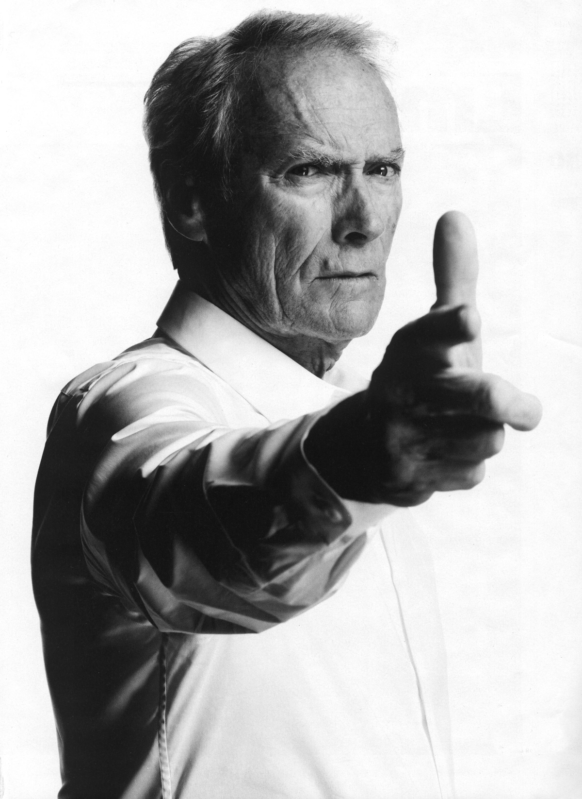

Russel Crowe
Russell Ira Crowe (Wellington, 7 aprile 1964) è un attore neozelandese.
È noto soprattutto per avere interpretato il ruolo di Massimo Decimo Meridio nel film Il gladiatore di Ridley Scott, ruolo che gli ha dato molta popolarità e gli ha consentito di aggiudicarsi il Premio Oscar come miglior attore protagonista nel 2001. Ha interpretato inoltre il matematico John Nash in A Beautiful Mind di Ron Howard, grazie al quale ha ottenuto un BAFTA, un Golden Globe e la sua terza candidatura all'Oscar, il capitano Jack Aubrey in Master & Commander - Sfida ai confini del mare di Peter Weir, il pugile James J. Braddock in Cinderella Man - Una ragione per lottare, sempre di Ron Howard.
Russell Crowe

Clint Eastwood
Clinton Eastwood Jr. (San Francisco, 31 maggio 1930) è un attore, regista, produttore cinematografico e compositore statunitense.
Considerato una delle figure più celebri e rappresentative della cinematografia internazionale,[1] Eastwood ha ottenuto un ampio successo commerciale e di critica sia come attore che come regista
Clint Eastwood
